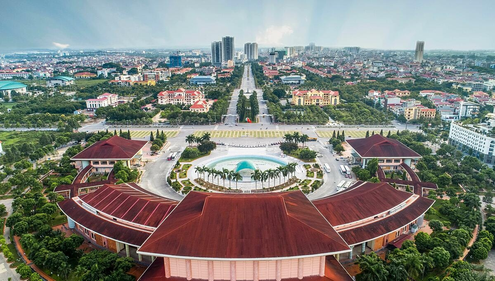
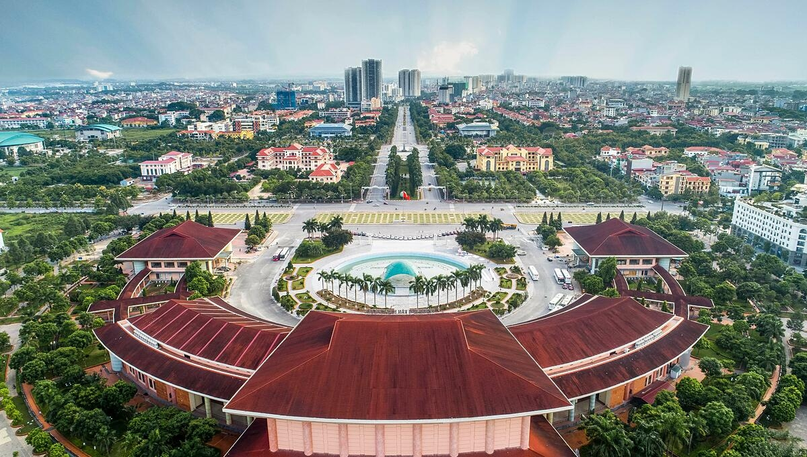

Văn hóa/Lịch sử
Ẩm thực: ẩm thực của Bắc Ninh rất đa dạng, phong phú, có thể kể đến: bánh phu thê Đình Bảng, bánh khúc làng Diềm, nem làng Bùi.
Công trình, kiến trúc: mang nét băn hóa Kinh Bắc xưa, một số cong trình còn mang nét đẹp tôn giáo: trung tâm văn hóa Kinh Bắc, làng tranh Đông Hồ, thành cổ Bắc Ninh.
Văn hóa Bắc Ninh có một nền văn hoá đặc sắc, một vùng quê có nhiều di tích lịch sử văn hoá, lễ hội dân gian, làng nghề truyền thống. Những dấu ấn lịch sử sống động truyền thống văn hoá Việt Nam, đậm đà bản sắc Kinh Bắc, được kết tinh trong những di sản văn hoá, các lễ hội dân gian. Bắc Ninh là địa phương thứ 3 xây dựng văn miếu có tầm cỡ, quy mô, trang trọng.
 
